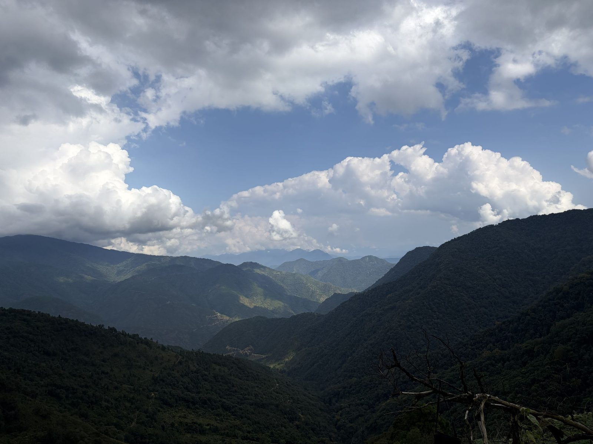

Two good lights.
Morning: stand at [spot]. The sun clears the ridge at about [time, by season].
Evening: stand at [spot]. [What you see from there.]
Come ten minutes early. The best light is short.
Month by month
| Month | Sunrise | Sunset |
|---|
Worked out for Bichom village, on the 15th of each month, Indian time, as if the horizon were flat. The hills make the first sun later and the last sun earlier.